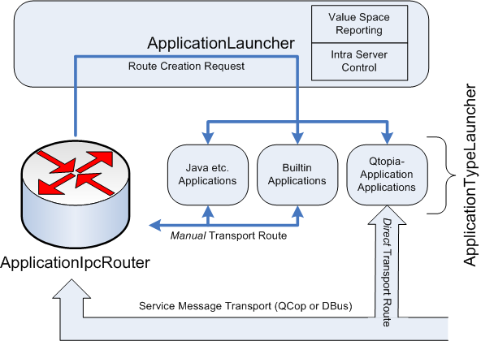
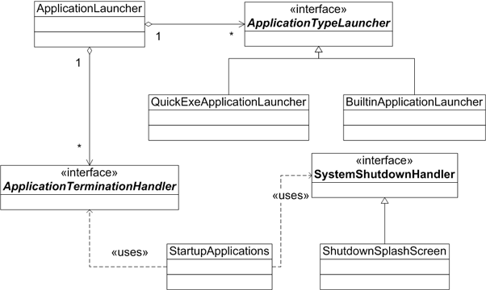

|
Home · All Namespaces · All Classes · Grouped Classes · Modules · Functions | |
IPC and application control are tightly linked in Qt Extended. Indeed, Qt Extended itself does not intrinsically understand the notion of "starting" an application. Qt Extended considers an application simply as a named IPC endpoint in the system that implements one or more IPC services for use by other applications or the system itself.
The primary role of the application control subsystem is to manage a component's ability to receive and respond to service requests. Thus the application control subsystem considers an application "running" when it is able to receive service messages even though the application may not be thought as such by an end user. Management of end user features of an application (such as when the UI is raised or hidden) is done by other system components.

At the center of the system is the ApplicationIpcRouter. The router's responsibility is to detect and direct IPC requests. On reception of an IPC request, the router requests that the ApplicationLauncher bring the application into a state where it is able to receive IPC requests. This generally involves executing an application, but, in special cases, may involve other actions. For example, "builtin applications" aren't seperate executables, but rather special modules within the Qt Extended Server.
During bring up the ApplicationLauncher (or, more specifically, the ApplicationTypeLauncher instances that will be discussed shortly) may install a "custom route" into the ApplicationIpcRouter for the particular application. If installed, the router should deliver all messages for this application to this route. This model allows "non-Qtopia" application types, such as Java games, to transform Qt Extended service and message requests into a form they understand. For example, sending a raise() message to a Java application may transformed into executing a special command line utility to start and raise the Java game.
The ApplicationLauncher itself does not know how to start any type of application. Instead, it acts as a coordinator for other system components that do. When asked to launch an application, the ApplicationLauncher collects together all tasks in the server that provide the ApplicationTypeLauncher interface. It then asks each in turn to launch the application until one accepts the request or all have been exhausted. It is the ApplicationTypeLauncher instances that actually launch the application and allow new application types to be easily added to the system.
The following class diagram shows the class dependencies of a few selected application control classes and demonstrates how other server tasks can interact with the application launcher. In the example (taken from the Qt Extended server) the StartupApplications task uses QtopiaServerApplication::addAggregateObject() to receive notifications about the startup process of particular applications (via the ApplicationTerminationHandler interface).

The following classes are part of the Qt Extended application control subsystem.
| ApplicationIpcRouter | Interface through which ApplicationTypeLauncher instances to control IPC message routing |
|---|---|
| ApplicationLauncher | Responsible for fundamental application management and IPC routing within Qtopia |
| ApplicationShutdownTask | Way of terminating all running Qt Extended applications before the Qt Extended server itself terminates |
| ApplicationTerminationHandler | Allows tasks to be notified, and possibly filter, when an application terminates |
| ApplicationTypeLauncher | Interface to control a particular application type in the system |
| BuiltinApplicationLauncher | Supports launching simple applications that run inside the Qt Extended Server process |
| ConsoleApplicationLauncher | Supports launching console applications |
| ExeApplicationLauncher | Simplifies implementing ApplicationTypeLauncher for process based applications |
| QCopRouter | Application ipc router for the QCop transport |
| QtopiaServerApplicationLauncher | Acts as a proxy for the Qt Extended Server within the application launcher framework |
| QuickExeApplicationLauncher | Supports launching quicklaunched Qt Extended applications |
| ApplicationIpcRouter::RouteDestination | Represents an IPC route destination |
| SandboxedExeApplicationLauncher | Supports launching untrusted downloaded application executables |
| SimpleExeApplicationLauncher | Supports launching regular QtopiaApplication executables |
| StartupApplications | Launches applications preemptively at startup |
| SystemShutdownHandler | Notifies tasks when the system is shutting down or restarting |
| TaskManagerEntry | Used to insert non-application items into the Running Applications/TaskManager window |
| UIApplicationMonitor | Monitors the running state of UI applications |
| Copyright © 2009 Trolltech | Trademarks | Qt Extended 4.4.3 |